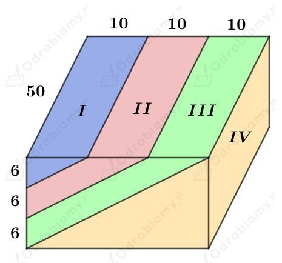
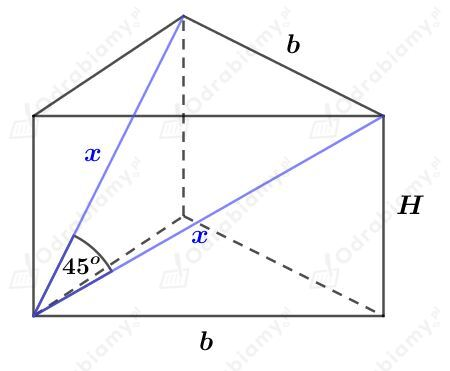
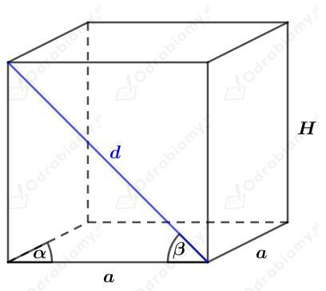
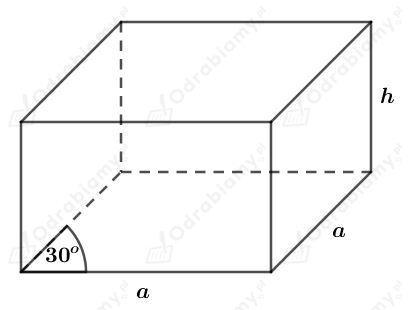
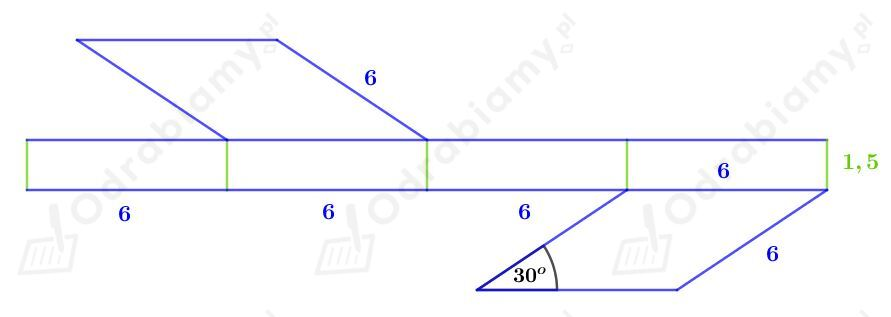

Dla ułatwienia wprowadzimy oznaczenia części tego klocka.

Pierwsza część to graniastosłup o podstawie w kształcie trójkąta prostokątnego (przyprostokątne mają długość 6 cm i 10 cm) oraz wysokości długości 50 cm.
Wyznaczmy jego objętość. Mamy:
Aby obliczyć objętość drugiej części musimy odjąć od objętości łącznej I i II kawałka objętość I kawałka.
Objętość łączna I i II kawałka to objętość graniastosłupa o podstawie w kształcie trójkąta prostokątnego (o przyprostokątnych długości 12 cm i 20 cm) oraz wysokości długości 50 cm.
Aby obliczyć objętość trzeciej części musimy odjąć od objętości łącznej I, II, III kawałka objętość I i II kawałka.
Objętość łączna I, II, III kawałka to objętość graniastosłupa o podstawie w kształcie trójkąta prostokątnego (o przyprostokątnych długości 18 cm i 30 cm) oraz wysokości długości 50 cm.
Obliczamy objętość czwartego kawałka, czyli objętość graniastosłupa o podstawie w kształcie trójkąta prostokątnego (o przyprostokątnych długości 18 cm i 30 cm) oraz wysokości długości 50 cm.
Każdy stopień to graniastosłup, którego podstawą jest trójkąt prostokątny o przyprostokątnych długości 20 cm i 25 cm. Wysokość tego graniastosłupa ma długość 1,2 m.
Obliczmy objętość jednego stopnia. Mamy:
Obliczmy, ile betonu zużyto na 15 takich stopni. Mamy:
Odp. Na 15 takich stopni zużyto 0,45 m3 betonu.
| Objętość dowolnego graniastosłupa wyraża się za pomocą wzoru: gdzie Pp jest polem powierzchni podstawy tego graniastosłupa, a H - długością jego wysokości. |
Rysunek:
Korzystając z odpowiedniego wzoru na pole trójkąta, wyznaczymy pole powierzchni podstawy. Mamy:
Korzystając z twierdzenia cosinusów mamy:
Wyznaczmy pole powierzchni bocznej tego graniastosłupa. Mamy:
Wyznaczmy pole powierzchni całkowitej tego graniastosłupa. Mamy:
Z treści zadania wiemy, że pole powierzchni całkowitej jest dwa razy większe niż pole powierzchni bocznej. Stąd mamy równanie:
Usuwamy niewymierność z mianownika i mamy:
Wyznaczmy objętość tego graniastosłupa. Mamy:
Rysunek:

Korzystając z twierdzenia cosinusów mamy:
Korzystając z twierdzenia Pitagorasa mamy:
Wyznaczmy pole powierzchni podstawy tego graniastosłupa. Korzystając ze wzoru na pole trójkąta równobocznego mamy:
Wyznaczmy objętość tego graniastosłupa. Mamy:
Rysunek:

Korzystając z funkcji sinus mamy:
Korzystając z funkcji cosinus mamy:
Wyznaczmy pole powierzchni podstawy. Korzystając ze wzoru na pole rombu mamy:
Wyznaczmy objętość tego graniastosłupa. Mamy:
| Objętość dowolnego graniastosłupa wyraża się za pomocą wzoru: gdzie Pp jest polem powierzchni podstawy tego graniastosłupa, a H - długością jego wysokości. |
Zauważmy, że na rysunku B przedstawiono siatkę graniastosłupa.
Wyznaczmy pole powierzchni podstawy tego graniastosłupa. Korzystając ze wzoru na pole równoległoboku mamy:
Z rysunku odczytujemy, że
Wyznaczmy objętość tego graniastosłupa. Mamy:
Rysunek:

Obliczmy pole powierzchni podstawy tego graniastosłupa. Korzystając ze wzoru na pole rombu mamy:
Wiemy, że pole powierzchni bocznej wynosi 36 cm2. Stąd otrzymujemy równanie:
Wiemy, że objętość tego graniastosłupa jest równa 27 cm2. Stąd mamy:
Wiedząc, że h=9/a mamy:
Wiedząc, że h=9/a mamy:
Naszkicujmy siatkę tego graniastosłupa:
